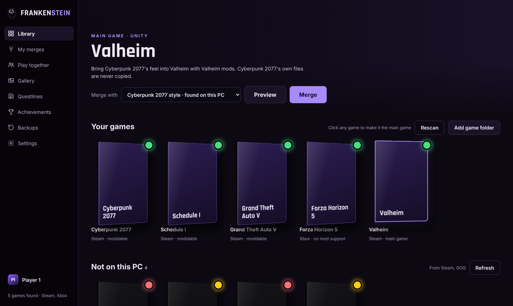

FRANKENSTEIN
Merge your games with mods. Pick any game you play, bring in the style of another, and Frankenstein sorts the rest.
Download for Windows
Free · Windows 10/11 · always the newest version
- Open FrankensteinSetup.exe and press Install. No admin needed.
- If Windows says "Windows protected your PC", click More info, then Run anyway.
- That's it. It updates itself from then on.

Source and details on GitHub · What's new